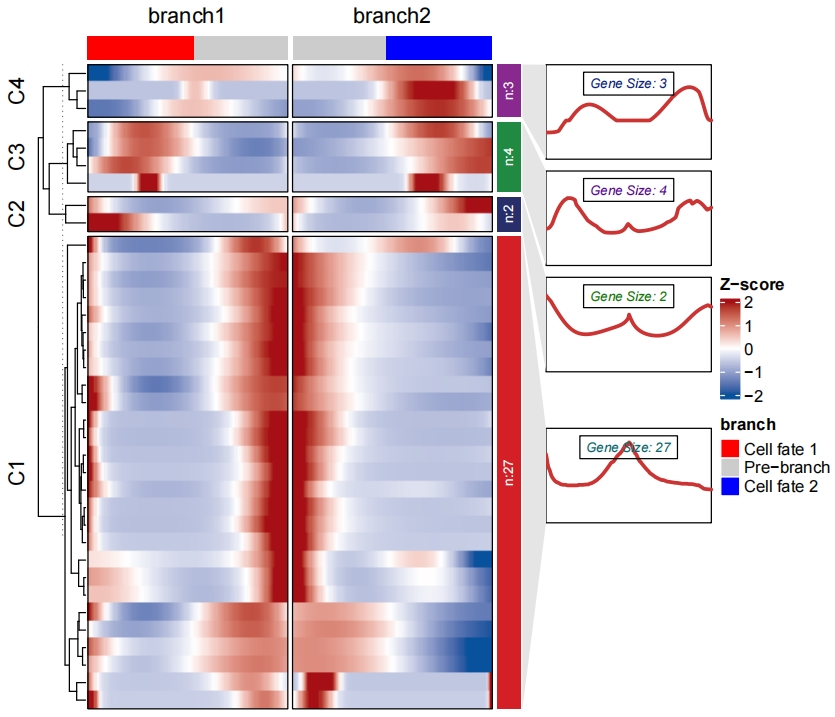

Chapter 6 Parse preudotime data
Monocle is a widely used bioinformatics tool designed for analyzing single-cell RNA sequencing (scRNA-seq) data. It allows for trajectory inference, differential expression analysis, and clustering of cells, all of which help in understanding dynamic biological processes such as cell differentiation, development, and lineage relationships. ClusterGvis can be implemented with Monocle and visualize the trajectory data.
6.1 Monocle2 implemention
The functions plot_pseudotime_heatmap, plot_genes_branched_heatmap, plot_multiple_branches_heatmap to visualize preudotime data in monocle2 version are slightly modified into plot_pseudotime_heatmap2, plot_genes_branched_heatmap2, plot_multiple_branches_heatmap2. The returned object can be recognized with visCluster directly.
The test data is from monocle::load_lung(), which you can load directly following the code:
6.1.1 plot_pseudotime_heatmap2
Return heatmap only using return_heatmap=T:
# return plot
plot_pseudotime_heatmap2(HSMM[sig_gene_names[1:100],],
num_clusters = 4,
cores = 1,
show_rownames = T,
return_heatmap = T)
Return list object containing clustered data:
# test code
df <- plot_pseudotime_heatmap2(HSMM[sig_gene_names[1:100],],
num_clusters = 4,
cores = 1)
# check data
str(df)
# List of 6
# $ wide.res :'data.frame': 100 obs. of 102 variables:
# ..$ gene : chr [1:100] "TSPAN6" "C1orf112" "CYP51A1" "AK2" ...
# ..$ 1 : num [1:100] -1.573 2.783 -1.646 -0.566 2.264 ...
# ..$ 2 : num [1:100] -1.55 2.65 -1.62 -0.57 2.19 ...
# ..$ 3 : num [1:100] -1.524 2.517 -1.587 -0.575 2.118 ...
# ...
# ..$ 96 : num [1:100] 0.48 -1.421 0.363 2.647 -1.753 ...
# ..$ 97 : num [1:100] 0.34 -1.46 0.21 2.86 -1.94 ...
# ..$ 98 : num [1:100] 0.1988 -1.4958 0.0542 3 -2.1274 ...
# .. [list output truncated]
# $ long.res :'data.frame': 10000 obs. of 5 variables:
# ..$ cluster : Factor w/ 4 levels "1","2","3","4": 1 1 1 1 1 1 1 1 1 1 ...
# ..$ gene : chr [1:10000] "TSPAN6" "CYP51A1" "AASS" "MGST1" ...
# ..$ cell_type : num [1:10000] 1 1 1 1 1 1 1 1 1 1 ...
# ..$ norm_value : num [1:10000] -1.573 -1.646 -1.86 -0.457 -2.024 ...
# ..$ cluster_name: Factor w/ 4 levels "cluster 1 (14)",..: 1 1 1 1 1 1 1 1 1 1 ...
# $ type : chr "monocle"
# $ geneMode : chr "all"
# $ geneType : chr "non-branched"
# $ pseudotime: num [1:100] 0 0.236 0.471 0.707 0.942 ...Line plot:
Heatmap:
Line annotation and mark gene names:
gene = sample(df$wide.res$gene,20,replace = F)
pdf(file = "one-branch.pdf",height = 6,width = 7)
visCluster(object = df,
plot.type = "both",
markGenes = gene)
dev.off()
6.1.2 plot_genes_branched_heatmap2
Return plot only:
data("HSMM")
data("BEAM_res")
# return plot
plot_genes_branched_heatmap2(HSMM[row.names(subset(BEAM_res,qval < 1e-4)),],
branch_point = 1,
num_clusters = 4,
cores = 1,
use_gene_short_name = T,
show_rownames = T,
return_heatmap = T)
Return data:
# test code
df <- plot_genes_branched_heatmap2(HSMM[row.names(subset(BEAM_res,qval < 1e-4)),],
branch_point = 1,
num_clusters = 4,
cores = 1,
use_gene_short_name = T,
show_rownames = T)
# check data
str(df)
# List of 6
# $ wide.res :'data.frame': 36 obs. of 202 variables:
# ..$ gene : chr [1:36] "BIRC5" "CDKN3" "ACTA2" "EFEMP1" ...
# ..$ 1 : num [1:36] 1.544 2.571 1.329 -1.595 0.609 ...
# ..$ 2 : num [1:36] 1.317 2.021 1.17 -1.45 0.498 ...
# ..$ 3 : num [1:36] 1.101 1.505 1.015 -1.295 0.389 ...
# .. [list output truncated]
# $ long.res :'data.frame': 7200 obs. of 5 variables:
# ..$ cluster : Factor w/ 4 levels "1","2","3","4": 1 1 1 1 1 1 1 1 1 1 ...
# ..$ gene : chr [1:7200] "BIRC5" "CDKN3" "STMN1" "CENPF" ...
# ..$ cell_type : num [1:7200] 1 1 1 1 1 1 1 1 1 1 ...
# ..$ norm_value : num [1:7200] 1.544 2.571 0.609 1.807 2.177 ...
# ..$ cluster_name: Factor w/ 4 levels "cluster 1 (27)",..: 1 1 1 1 1 1 1 1 1 1 ...
# $ type : chr "monocle"
# $ geneMode : chr "all"
# $ geneType : chr "branched"
# $ pseudotime: chr [1:200] "Cell fate 1" "Cell fate 1" "Cell fate 1" "Cell fate 1" ...Heatmap:
Line annotation:
pdf(file = "two-branch.pdf",height = 6,width = 7)
visCluster(object = df,
plot.type = "both")
dev.off()
6.1.3 plot_multiple_branches_heatmap2
Return plot only:
# return plot
plot_multiple_branches_heatmap2(HSMM[row.names(subset(BEAM_res,qval < 1e-4)),],
branches = c(1,3,4,5),
num_clusters = 4,
cores = 1,
use_gene_short_name = T,
show_rownames = T,
return_heatmap = T)
Return data:
# test code
df <- plot_multiple_branches_heatmap2(HSMM[row.names(subset(BEAM_res,qval < 1e-4)),],
branches = c(1,3,4,5),
num_clusters = 4,
cores = 1,
use_gene_short_name = T,
show_rownames = T)
# check data
str(df)
# List of 6
# $ wide.res :'data.frame': 36 obs. of 402 variables:
# ..$ gene : chr [1:36] "BIRC5" "CDKN3" "ACTA2" "EFEMP1" ...
# ..$ 1 : num [1:36] 2.124 2.219 -0.908 -1.749 1.244 ...
# ..$ 2 : num [1:36] 2.061 2.156 -0.937 -1.699 1.24 ...
# ..$ 3 : num [1:36] 1.999 2.094 -0.965 -1.649 1.236 ...
# $ long.res :'data.frame': 14400 obs. of 5 variables:
# ..$ cluster : Factor w/ 4 levels "1","2","3","4": 1 1 1 1 1 1 1 1 1 1 ...
# ..$ gene : chr [1:14400] "BIRC5" "CDKN3" "STMN1" "CENPF" ...
# ..$ cell_type : num [1:14400] 1 1 1 1 1 1 1 1 1 1 ...
# ..$ norm_value : num [1:14400] 2.12 2.22 1.24 2.01 2.71 ...
# ..$ cluster_name: Factor w/ 4 levels "cluster 1 (18)",..: 1 1 1 1 1 1 1 1 1 1 ...
# $ type : chr "monocle"
# $ geneMode : chr "all"
# $ geneType : chr "branched"
# $ pseudotime: Factor w/ 4 levels "1","3","4","5": 1 1 1 1 1 1 1 1 1 1 ...Heatmap:
library(RColorBrewer)
pdf(file = "multiple-branch.pdf",height = 6,width = 8)
visCluster(object = df,
plot.type = "both",
ht.col.list = list(col_range = seq(-2,2,length.out = 100),
col_color = colorRampPalette(brewer.pal(9,"PRGn"))(100)),
pseudotime_col = ggsci::pal_d3()(4))
dev.off()

Add enrichment annotation for each cluster:
# enrich
df <- plot_multiple_branches_heatmap2(HSMM[row.names(subset(BEAM_res,qval < 0.1)),],
branches = c(1,3,4,5),
num_clusters = 4,
cores = 1,
use_gene_short_name = T,
show_rownames = T)
# enrich for clusters
library(org.Hs.eg.db)
enrich <- enrichCluster(object = df,
OrgDb = org.Hs.eg.db,
type = "BP",
organism = "hsa",
pvalueCutoff = 0.5,
topn = 5,
seed = 5201314)
# check
head(enrich[1:3,])
# group Description pvalue ratio
# GO:1904238 C1 pericyte cell differentiation 0.002325826 25
# GO:0034982 C1 mitochondrial protein processing 0.002748268 25
# GO:0072537 C1 fibroblast activation 0.002748268 25
markGenes = sample(unique(df$wide.res$gene),25,replace = F)
# PLOT
pdf('branch-enrich.pdf',height = 9,width = 16,onefile = F)
visCluster(object = df,
plot.type = "both",
column_names_rot = 45,
show_row_dend = F,
markGenes = markGenes,
markGenes.side = "left",
annoTerm.data = enrich,
go.col = rep(jjAnno::useMyCol("calm",n = 4),each = 5),
add.bar = T,
line.side = "left")
dev.off()
6.2 Monocle3 implemention
There is a big update for monocle3 and much of functions have been removed from monocle3. We supply pre_pseudotime_matrix function to extract differentiated genes and the ouput can be used with ClusterGvis.
Here we run an example workflow with monocle3:
# devtools::install_github('cole-trapnell-lab/monocle3')
library(monocle3)
library(dplyr)
cell_metadata <- readRDS(system.file('extdata',
'worm_embryo/worm_embryo_coldata.rds',
package='monocle3'))
gene_metadata <- readRDS(system.file('extdata',
'worm_embryo/worm_embryo_rowdata.rds',
package='monocle3'))
expression_matrix <- readRDS(system.file('extdata',
'worm_embryo/worm_embryo_expression_matrix.rds',
package='monocle3'))
cds <- new_cell_data_set(expression_data=expression_matrix,
cell_metadata=cell_metadata,
gene_metadata=gene_metadata)
cds <- preprocess_cds(cds)
cds <- align_cds(cds, alignment_group =
"batch", residual_model_formula_str = "~ bg.300.loading +
bg.400.loading + bg.500.1.loading + bg.500.2.loading +
bg.r17.loading + bg.b01.loading + bg.b02.loading")
cds <- reduce_dimension(cds)
cds <- cluster_cells(cds)
cds <- learn_graph(cds)
cds <- order_cells(cds, root_pr_nodes='Y_21')
modulated_genes <- graph_test(cds, neighbor_graph = "principal_graph", cores = 4)
genes <- row.names(subset(modulated_genes, q_value == 0 & morans_I > 0.25))Extact expression matrix:
mat <- pre_pseudotime_matrix(cds_obj = cds,
gene_list = genes)
# check
head(mat[1:5,1:5])
# 1 2 3 4 5
# WBGene00013882 -0.7265393 -0.7263892 -0.7262392 -0.7260891 -0.7259390
# WBGene00002085 0.8059370 0.8076543 0.8093716 0.8110889 0.8128062
# WBGene00016114 2.8256183 2.8198074 2.8139964 2.8081855 2.8023746
# WBGene00012753 2.7917688 2.7861478 2.7805268 2.7749058 2.7692848
# WBGene00015354 -1.1233255 -1.1229564 -1.1225872 -1.1222180 -1.1218489Run ClusterGvis workflow:
# kmeans
ck <- clusterData(exp = mat,
cluster.method = "kmeans",
cluster.num = 5)
# add line annotation
pdf('monocle3.pdf',height = 10,width = 8,onefile = F)
visCluster(object = ck,
plot.type = "both",
add.sampleanno = F,
markGenes = sample(rownames(mat),30,replace = F))
dev.off()